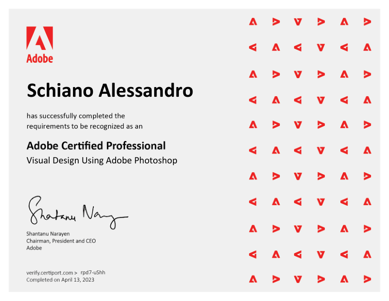

Nato Graphic Designer ed evoluto in Visual Designer.
Il mio percorso professionale, da approfondire.
CV aggiornato e certificati originali del mio percorso formativo.
Il mio nucleo principale è il Graphic & Visual Design. Lo sviluppo web, le passioni culturali e l'adattabilità internazionale completano il mio profilo creativo.
Rendo al massimo in ambienti strutturati e tranquilli, dove posso applicare profonda concentrazione individuale e cura meticolosa.
Perfezionata durante 4 mesi di Erasmus in Lituania e viaggi internazionali continui, ampliando apertura culturale e capacità comunicative.
Passione autentica per il vestire bene, la cultura streetwear, la qualità dei tessuti e l'estetica personale.
Ossessione per la cinematografia d'autore, regia visiva, color grading e la narrazione attraverso le inquadrature.
Ascolto continuo e ricerca sonora; la musica detta il ritmo e l'atmosfera emotiva di ogni mio progetto grafico.
Amante dell'esplorazione di nuove città, culture e scenari visivi che rigenerano continuamente il mio modo di creare.
Dalle prime sperimentazioni da autodidatta allo streetwear, fino al packaging per l'export agroalimentare e alla maturità commerciale.
La mia scelta iniziale era orientata all'alta ristorazione, motivo per cui ho intrapreso gli studi presso l'IPSAR Cavalcanti di San Giovanni a Teduccio. Nei primi anni l'entusiasmo era alto, ma durante le prime esperienze di stage al terzo anno ho realizzato che la cucina apparteneva alla dimensione degli hobby personali. Parallelamente, un'attitudine autentica stava già emergendo: fin dall'età di dieci anni utilizzavo Photoshop per ideare grafiche all'interno delle community di gaming. Quello che era nato come gioco si è presto rivelato un talento spontaneo per la composizione e l'estetica visiva.
Subito dopo il diploma ho scelto di mettermi alla prova con un programma Erasmus di quattro mesi in Lituania. Vivere in totale autonomia in un ambiente multiculturale ha rafforzato il mio spirito di adattamento e impresso una decisa accelerazione alla mia padronanza dell'inglese. Da quell'esperienza è nato un profondo amore per i viaggi, per l'esplorazione di nuove culture e per il confronto con realtà visive differenti: una curiosità costante che arricchisce tuttora la mia visione e consolida continuamente il mio inglese scritto e parlato (livello B1/B2).
Deciso a trasformare l'istinto in una carriera concreta, ho aperto un profilo Instagram per esporre i miei lavori, realizzando artwork e ritratti digitali anche a titolo gratuito per affinare la tecnica e generare visibilità. La qualità dei progetti ha presto aperto la strada a commissioni retribuite: ho curato visual e cover art ufficiali per la scena musicale, collaborando sia con talenti emergenti che con artisti affermati quali Laioung e Blair. Desideroso di colmare ogni lacuna tecnica con solide basi metodologiche, ho successivamente frequentato un corso specialistico avanzato in grafica pubblicitaria.
Attratto dalla cultura dell'abbigliamento, ho fondato con due soci il brand indipendente Exxxplicit. Qui ho assunto la direzione visiva completa: dalla creazione dei file di stampa serigrafica e packaging, fino alla strategia di comunicazione digitale. Ho concepito un'estetica visiva basata sull'unione viscerale tra sentimento, amore ed esplicita intimità. L'idea ha innescato un vero trend, generando un forte engagement organico e portando le collezioni a ripetuti sold-out. Nonostante la conclusione del progetto per divergenze di visione con i soci, questa esperienza mi ha formato concretamente nella gestione reale della produzione e del brand building.
Subito dopo Exxxplicit, ho avviato una nuova collaborazione insieme a uno dei miei precedenti soci per affiancare un imprenditore nello sviluppo del brand Tokko (@tokko__it). Il progetto era focalizzato sull'export di eccellenze gastronomiche e agroalimentari italiane verso i mercati nazionali ed europei. Ho gestito l'intero costrutto visivo del brand: dallo studio del packaging alimentare e dell'etichettatura conforme, fino alla narrazione fotografica e alla linea editoriale della pagina Instagram, valorizzando l'autenticità e l'estetica gourmet del Made in Italy.